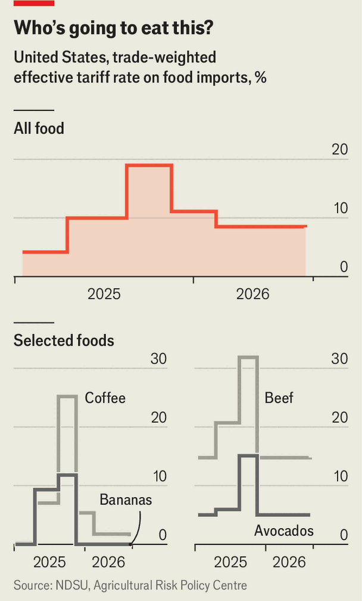
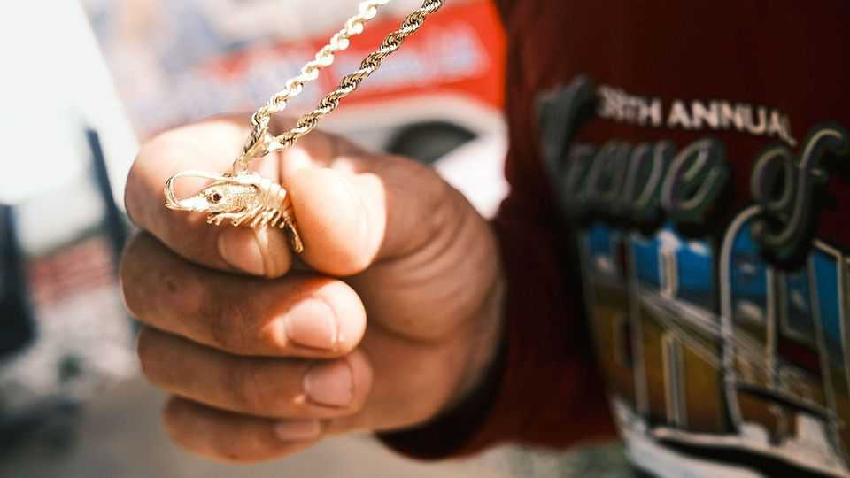

Shrimpers are the latest group seeking protection from Washington
But Donald Trump is waking up to the risks of pricey food

Aug 27th 2026
“WE SHOULD BE excited, but we’re not because we got a boatload of shrimp and it’s worth no money,” says Waylon Buras, watching his men unload a 40,000-pound haul onto the docks of the Louisiana bayou. The fisherman had just returned home after 13 days at sea, the longest trip of his career. Lifting a fistful of iridescent shrimp to the sun, he notes with frustration how perfect they are: “They look like glass.” In May a pound sold for $2.00, but today he will get just $1.80.
Cheap shrimp from abroad keep driving down prices, while high fuel costs wipe away any remaining profit. He wants the government to do more. “They can either subsidise us at the end of the year or they need to put a hold on the imports so we can catch our breath,” he says. “We’re almost drowning.”
Gulf-coast shrimpers from Alabama to Texas are the latest group hoping to benefit from Donald Trump’s tariffs. Last year taxes on imported food more than quadrupled. Mr Trump has not stopped imports of shrimp, but in July his trade representative announced duties of at least 10% on a broad swathe of goods, including shrimp from countries such as Vietnam and Indonesia. The problem for shrimpers, as for some other American industries, is that tariffs may not be enough to save them, and may in the meantime raise costs for everyone else.
American shrimpers didn’t always struggle to compete. When seafood casseroles and Jell-O salads became popular in the mid-20th century, housewives bought home-grown shrimp. Then aid programmes scrambled the economics. In the 1970s, the World Bank and USAID spent billions teaching malnourished communities in Latin America and South-East Asia how to fish at scale.

Today nearly 95% of the shrimp Americans eat is imported; in four decades the share harvested in the Gulf fell from 29% to 4.5%. A National Oceanic and Atmospheric Administration (NOAA) report published in March found that a pandemic-era glut turned a simmering problem into a crisis. Between 2021 and 2023 prices of Gulf shrimp halved, making shrimping unprofitable. Crews stopped going out to sea and the industry lost 1,200 jobs. Revenue more than halved in just two years, to $221m. Hurricanes and oil spills add more risk. “Every shock shrinks the fleet,” says Christopher Liese, an economist at NOAA who wrote the recent report.
The shrimp lobby was relieved to be included in the administration’s tariff announcement in July. Jessica Domangue, a representative in the Louisiana House, reckons big-shots in Washington are finally “waking up” to the plight of her constituents. However it is unclear how long the tariffs will last.
Twenty-five states have sued to block Mr Trump’s new levies, which the White House has sought to impose under Section 301 of the 1974 Trade Act. If they are held to be legal, Mr Trump may himself move to lower them. The president seems to be realising that tariffs do indeed raise prices and that American consumers don’t like that; voters now rank affordability as their top concern. Florida lobbyists persuaded the White House to place a heavy duty on Mexican tomatoes, which supply 70% of the domestic market. In the nine months to April, tomato prices surged by 50%. Such effects were predictable. In the 1930s sugar magnates secured the dream protection package: tariffs, production caps and price supports from the government. Americans now pay a fifth more than the global average for sugar. The American Enterprise Institute, a think-tank, estimates that the policies cost each household $40 a year and keep just 4,000 farms afloat.

For some food products, Mr Trump is now reversing course. After raising fees on coffee, cocoa, beef, bananas and avocados last summer, the administration lowered them a few months later (see chart). Facing a broad backlash over grocery prices, on August 21st the president said he would let 300,000 tonnes of ground beef be imported, tariff-free, for 90 days. Hamburger-lovers cheered; cattle ranchers are furious. Pete Ricketts, a Republican senator from Nebraska being challenged by a left-leaning Independent, Dan Osborn, was among the president’s usual allies to break rank. “Flooding the market with lower-quality beef”, Mr Ricketts wrote on X, “compromises Nebraska farmers and ranchers.”
Even if tariffs do remain, they are unlikely to solve the economics of shrimping. “Tariffs may buy time but won’t make the industry competitive or make the underlying issues go away,” says David Ortega, a food economist at Michigan State University. The average vessel in the fleet that fishes federal waters in the Gulf is 34 years old. Chronic problems have made reinvesting in infrastructure a bad bet. Some legislators are now pushing for more changes. Bills in Congress would bar federal funds from supporting overseas aquaculture and require the government to buy only American shrimp for school lunches, military cafeterias and food programmes.

Back on the bayou it is clear how much has been lost since the glory days of American shrimping. Years ago fishermen would fill the pool hall after a hard day’s work and there were dances in a community ballroom every weekend. Now abandoned packing sheds dot the coastline. Some residents have taken to meth and the Family Dollar store closed a few months ago.
Mr Buras reckons things are getting worse. Before this trip, his crew asked for a little extra money upfront to buy clothes for their children for the new school year. In the boat’s cramped air-conditioned quarters, as shrimp are vacuumed out from its underbelly, the men explain why they keep at it. “It’s an addiction,” says Mr Buras’s son-in-law. They like the freedom, they say, and the sunsets. In four days they go back out to sea.■
Stay on top of American politics with The US in brief, our daily newsletter with fast analysis of the most important political news, and Checks and Balance, a weekly note that examines the state of American democracy and the issues that matter to voters.